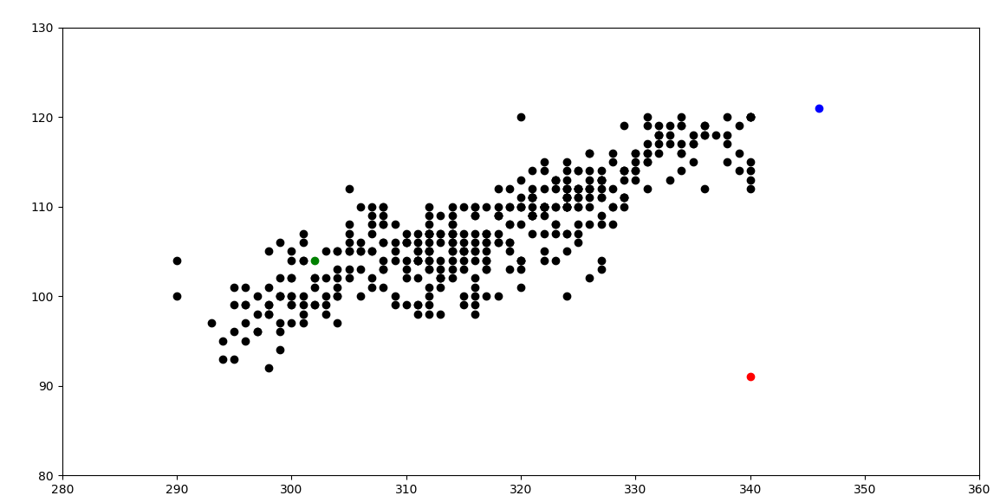
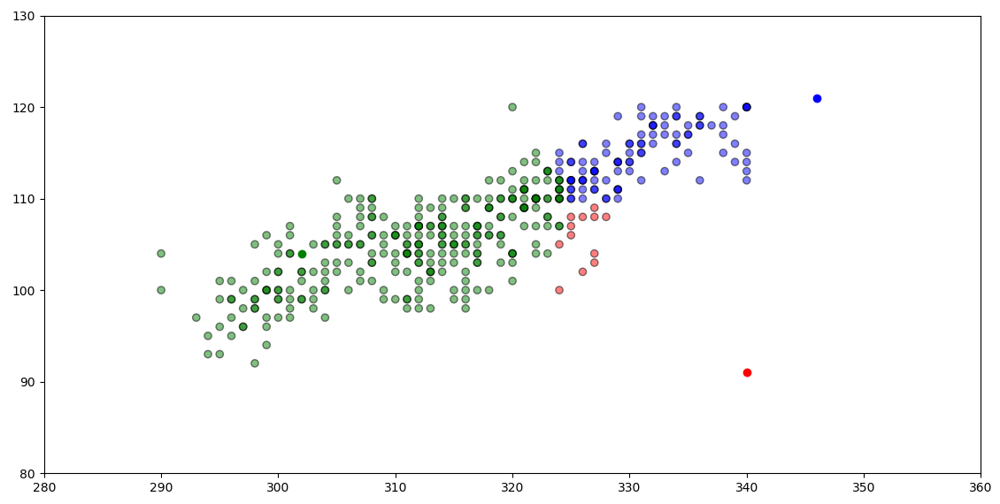
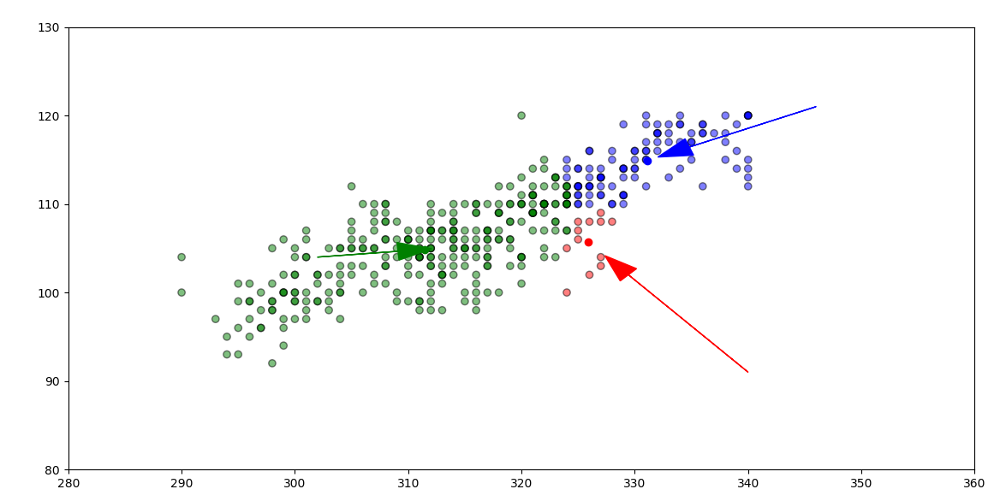
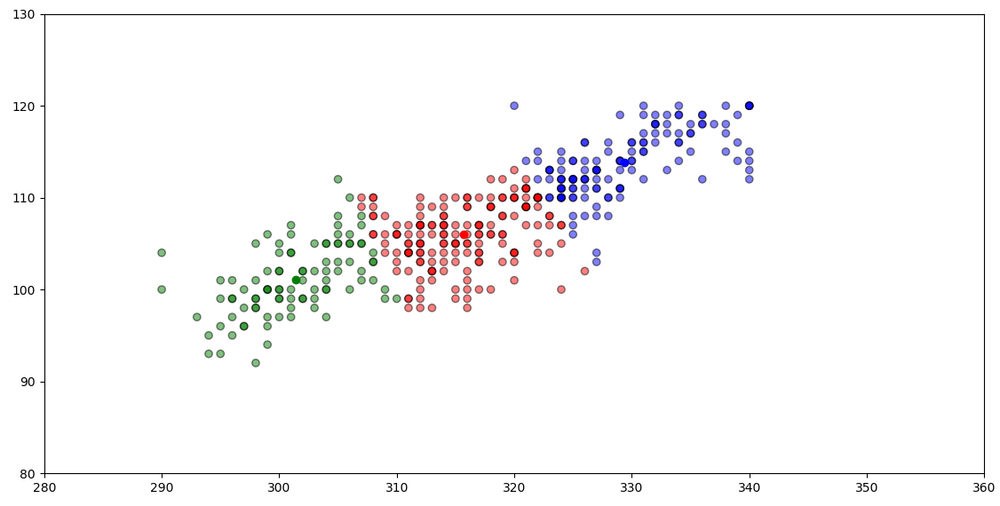
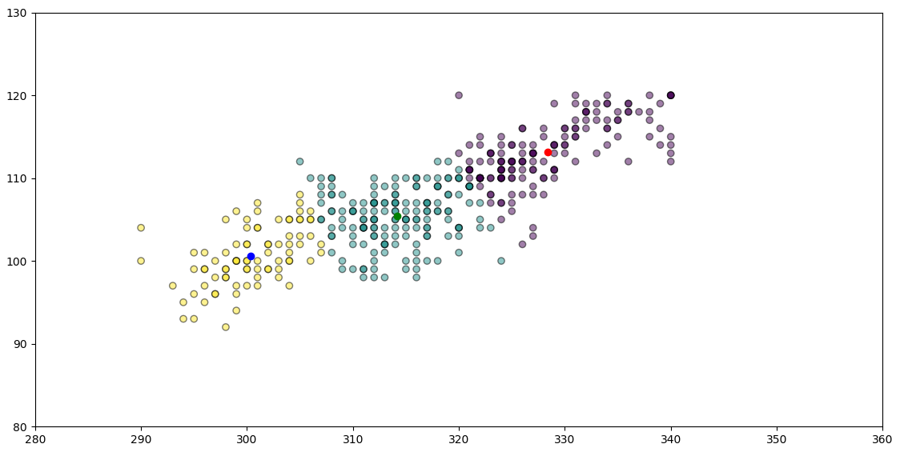

K-MEANS CLUSTERING IN PYTHON
K-means clustering adalah algoritma pengelompokan yang bertujuan untuk mem-partisi dan observasi ke dalam banyak kelompok .
Fungsi dari algoritma ini adalah mengelompokkan data kedalam beberapa cluster. Karakteristik dari algoritma ini adalah :
- Memiliki n buah data
- Input berupa jumlah data dan jumlah cluster (kelompok)
- Pada setiap cluster / kelompok memiliki sebuah centroid yang mempresentasikan cluster tersebut.
Algoritma K-Means
Secara sederhana algoritma K-Means dimulai dari tahap berikut :
- Pilih K buah titik centroid.
- Menghitung jarak data dengan centroid.
- Update nilai titik centroid.
- Ulangi langkah 2 dan 3 sampai nilai dari titik centroid tidak lagi berubah.
Kita coba gambarkan dalam sebuah flowchart, agar kita lebih mudah memahami algoritma K-Means. Berikut adalah gambaran flowchartnya :

Jadi dari flowchart diatas, kita memiliki input dan 3 buah proses.
-
Yaitu pertama adalah proses menghitung centroid, kemudian --
-
proses kedua menghitung data yang akan dikelompokkan dengan centroid, -
-
kemudian proses ketiga adalah mengelompokkan data berdasarkan jarak terdekat (minimum distance).
Dan kita membuat perulangan dengan kondisi "apakah posisi centroid tetap dan tidak ada perubahan terhadap datanya ?" apabila ya maka kita selesai melakukan pengelompokan. Tapi apabila masih ada perubahan centroid maka kita update kembali nilai centroid melalui proses pertama.
- download data :
Mulai dengan mengimport dataset.
in[1]:
import pandas as pd
import numpy as np
import matplotlib.pyplot as plt
import sklearn
# Importing the dataset
data = pd.read_csv('Admission_Predict.csv')
print("Input Data and Shape")
print(data.shape)
data.head() #just view data from 1 to 5 , to view all : data()
out [1] :
Input Data and Shape (400, 9)
Mengambil nilai and sajikan dengan gambar bagan.
f1 = data['GRE Score'].values
f2 = data['TOEFL Score'].values
X = np.array(list(zip(f1, f2)))
df= pd.DataFrame({'x':X[:,0],'y':X[:,1]})
np.random.seed(500)
k = 3
# centroids[i] = [x, y]
centroids = {
i+1: [np.random.randint(285, 350), np.random.randint(90, 130)]
for i in range(k)
}
print(centroids)
fig = plt.figure(figsize=(5, 5))
plt.scatter(df['x'], df['y'], color='k')
colmap = {1: 'r', 2: 'g', 3: 'b'}
for i in centroids.keys():
plt.scatter(*centroids[i], color=colmap[i])
plt.xlim(280, 360)
plt.ylim(80, 130)
plt.show()
out [2] : {1: [340, 91], 2: [302, 104], 3: [346, 121]}

Tahap pemrosesan data (penentuan centroid dan perhitungan jarak)
in[2]:
def assignment(df, centroids):
for i in centroids.keys():
# sqrt((x1 - x2)^2 - (y1 - y2)^2)
df['distance_from_{}'.format(i)] = (
np.sqrt(
(df['x'] - centroids[i][0]) ** 2
+ (df['y'] - centroids[i][1]) ** 2
)
)
centroid_distance_cols = ['distance_from_{}'.format(i) for i in centroids.keys()]
df['closest'] = df.loc[:, centroid_distance_cols].idxmin(axis=1)
df['closest'] = df['closest'].map(lambda x: int(x.lstrip('distance_from_')))
df['color'] = df['closest'].map(lambda x: colmap[x])
return df
df = assignment(df, centroids)
fig = plt.figure(figsize=(5, 5))
plt.scatter(df['x'], df['y'], color=df['color'], alpha=0.5, edgecolor='k')
for i in centroids.keys():
plt.scatter(*centroids[i], color=colmap[i])
plt.xlim(280, 360)
plt.ylim(80, 130)
plt.show()

Tahap selanjutnya ulangi pemrosesan awal dengan centroid dari proses perhitungan.
in[3]:
import copy
old_centroids = copy.deepcopy(centroids)
def update(k):
for i in centroids.keys():
centroids[i][0] = np.mean(df[df['closest'] == i]['x'])
centroids[i][1] = np.mean(df[df['closest'] == i]['y'])
return k
centroids = update(centroids)
print(centroids)
fig = plt.figure(figsize=(5, 5))
ax = plt.axes()
plt.scatter(df['x'], df['y'], color=df['color'], alpha=0.5, edgecolor='k')
for i in centroids.keys():
plt.scatter(*centroids[i], color=colmap[i])
plt.xlim(280, 360)
plt.ylim(80, 130)
for i in old_centroids.keys():
old_x = old_centroids[i][0]
old_y = old_centroids[i][1]
dx = (centroids[i][0] - old_centroids[i][0]) * 0.75
dy = (centroids[i][1] - old_centroids[i][1]) * 0.75
ax.arrow(old_x, old_y, dx, dy, head_width=2, head_length=3, fc=colmap[i], ec=colmap[i])
plt.show()
out [3] : new centroids {1: [325.9166666666667, 105.66666666666667], 2: [311.46875, 104.875], 3: [331.09, 114.92]}

Perhatikan bahwa salah satu merah sekarang hijau dan salah satu biru sekarang merah. semakin dekat.
sekarang mengulangi sampai tidak ada perubahan pada salah satu cluster
Ulangi tahap pemrosesan data.
in[4] :
df = assignment(df, centroids)
# Plot results
fig = plt.figure(figsize=(5, 5))
plt.scatter(df['x'], df['y'], color=df['color'], alpha=0.5, edgecolor='k')
for i in centroids.keys():
plt.scatter(*centroids[i], color=colmap[i])
plt.xlim(280, 360)
plt.ylim(80, 130)
plt.show()
# Continue until all assigned categories don't change any more
while True:
closest_centroids = df['closest'].copy(deep=True)
centroids = update(centroids)
df = assignment(df, centroids)
if closest_centroids.equals(df['closest']):
print(centroids)
break
fig = plt.figure(figsize=(5, 5))
plt.scatter(df['x'], df['y'], color=df['color'], alpha=0.5, edgecolor='k')
for i in centroids.keys():
plt.scatter(*centroids[i], color=colmap[i])
plt.xlim(280, 360)
plt.ylim(80, 130)
plt.show()
ketika proses berhenti makan data centroid baru muncul dan juga plotting hasil data.
out [4] : new centroids {1: [315.6878612716763, 105.96531791907515], 2: [301.36842105263156, 101.08421052631579], 3: [329.3863636363636, 113.85606060606061]}

Sekarang kita akan melihat bagaimana mengimplementasikan K-Means Clustering menggunakan scikit-learn.
in [5] :
The scikit-learn approach
Example 1
We will use the same dataset in this example.
from sklearn.cluster import KMeans
df= pd.DataFrame({'x':X[:,0],'y':X[:,1]})
kmeans = KMeans(n_clusters=3)
kmeans.fit(df)
labels = kmeans.predict(df)
centroids = kmeans.cluster_centers_
print(centroids)
fig = plt.figure(figsize=(5, 5))
colors = map(lambda x: colmap[x+1], labels)
plt.scatter(df['x'], df['y'], c=labels, alpha=0.5, edgecolor='k')
for idx, centroid in enumerate(centroids):
plt.scatter(*centroid, color=colmap[idx+1])
plt.xlim(280, 360)
plt.ylim(80, 130)
plt.show()
out [5] : centroids [[328.36363636 113.18831169] [314.17073171 105.40243902] [300.37804878 100.57317073]]

Anda dapat melihat bahwa nilai centroid sama, tetapi dalam urutan yang berbeda.